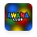

Подростки
Reverse
«Я здесь свой»Reverse — пространство для подростков, где можно быть собой: командные игры, разговоры по душам и наставники, которые правда слушают. Здесь никто не оценивает — только слушают и принимают.
Reverse — пространство для подростков, где можно быть собой: командные игры, разговоры по душам и наставники, которые правда слушают. Здесь никто не оценивает — только слушают и принимают.
Reverse создан для подростков, которые хотят быть услышанными — без осуждения и лишних вопросов. Через игры, откровенные разговоры и поддержку наставников подростки находят пространство, где можно оставаться собой и чувствовать: «я здесь свой».
Встречи проходят в тёплой, неформальной атмосфере: командные игры чередуются с честными разговорами о жизни, вере и трудностях взросления. Рядом всегда наставники, которые готовы слушать и поддерживать — без нравоучений.


Фото с настоящих встреч Reverse — галерею будем пополнять по мере новых снимков.


